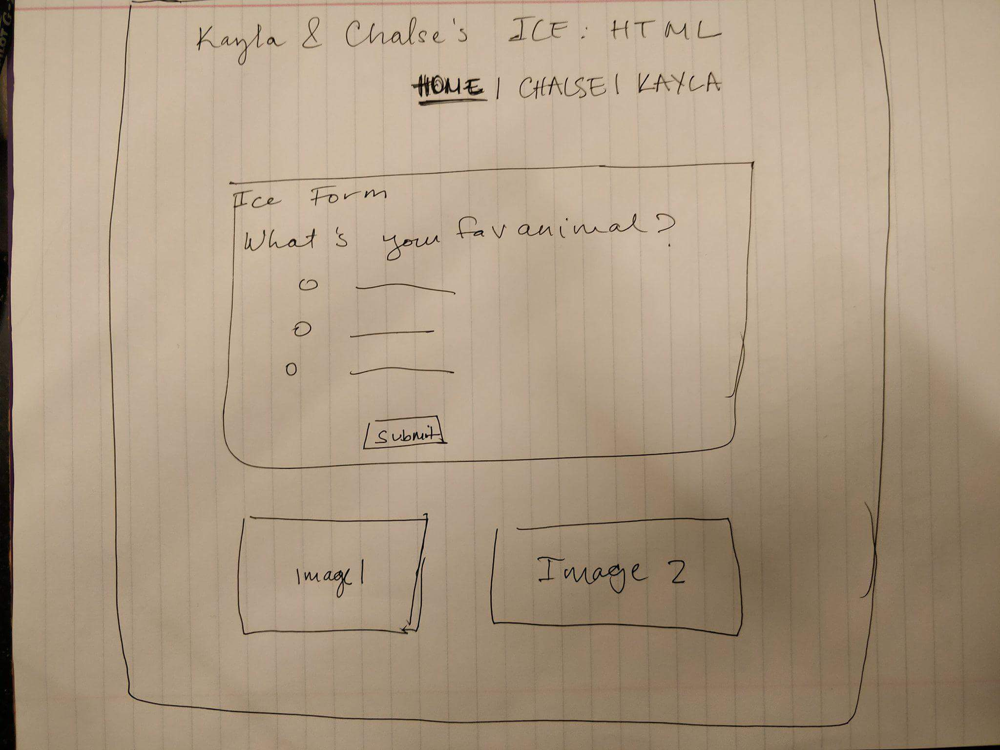
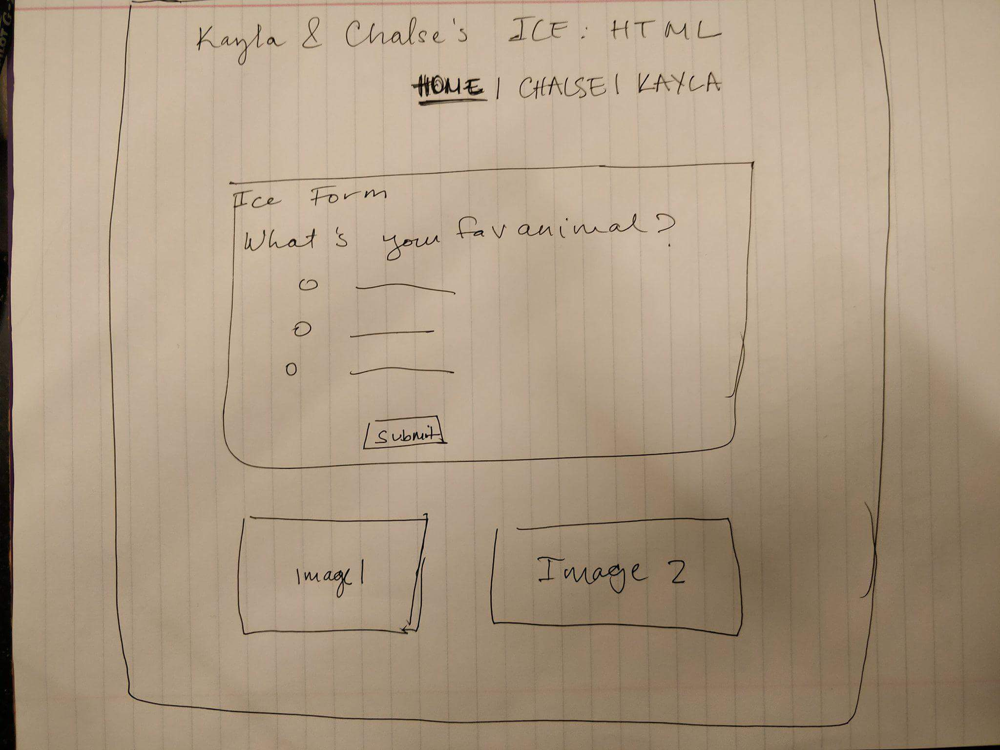

Welcome to Kayla's Page
 

2. I looked at safari,internet explorer and google chrome the layout looks very similar to each other.I didn't expect to notice anything different considering they are all internet sites. But I did notice that the way the audio was styled was different in each browser. In firefox the audio had a darker gray box with white symbols. In Safari, the audio had a lighter gray box with Live Broadcast and a play and speaker symbols that were white. In google chrome, the audio is dispalyed with a offwhite box aroud it and some of the symbols are light blue and light gray.
3. I have the ability to hover the title, it show a hand symbol sd if it wants to click on something. When I hover over the paragraph text, it doesn't allow me to click on anything. This was the same in all of the browsers.
6. I hosted the code.